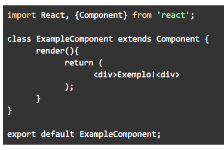

No React podemos declarar componentes de duas maneiras diferentes: como uma classe ou como uma função (que são chamados de componentes funcionais). No entanto, o conceito geral de um componente e como o declaramos é quase sempre o mesmo: importamos os recursos necessários (no caso, universalmente precisamos importar o React em si), criamos o componente, como uma classe ou função que retornam código JSX e a exportamos. Do mesmo modo veremos que, funcionalmente, ambos não são tão distantes assim – principalmente na versão mais recente do React.
Mas quais são então as diferenças? Além de serem declarados de modo diferente, o fato é que componentes de classe têm acesso a recursos adicionais. Para ilustrar o porquê disso, vamos observar uma declaração simples:
Aqui importamos o React em si na primeira linha e, mais importante no nosso caso, uma classe chamada “Component”. Essa classe contém todo um conjunto de métodos e operações úteis necessárias para um componente funcionar. Sem ela nosso componente não é um componente! Ela é que “dá vida” por assim dizer à classe que estamos criando.
Agora, na declaração usamos a expressão extends, certo? Isso quer dizer que tudo, mas tudo mesmo, que está na classe Component agora também existe na nossa classe “filha”. É por conta dessa declaração que temos alguns recursos a mais disponíveis quando criamos componentes dessa forma. Mas por que esses recursos não existem em componentes funcionais? Bem, vamos ver como os criamos, e tudo vai ficar um pouco mais claro:
Ok, o que tudo isso quer dizer? Bom, nós simplesmente importamos o React (não precisamos da classe Component) e declaramos uma variável (neste caso uma constante) como uma função que recebe o parâmetro props. Nós fazemos isso porque precisamos exportar algo, lembra? Perceba que aqui a sintaxe é bem mais enxuta: não temos uma função render por exemplo. É aqui que está o “pulo do gato”: quando declaramos e retornamos uma função com o React importado, ele interpreta sozinho que aquela função representa um componente, e cria o necessário para que o que exportamos seja reconhecido como tal.
A questão é que essa “conversão” deixa de lado várias features que temos na classe Component. Isso significa que, sim, temos mais algumas limitações no que podemos ou não fazer, mas em contrapartida esse método é bem mais ágil, enxuto e leve.
Em ambos os casos exportamos usando o termo default. Isso é uma conveniência que criamos para que, ao importar o componente mais tarde, não precisemos nos preocupar com o nome que damos ao importador: ele sempre vai “pegar” o que declaramos por padrão. Isso é porque na sintaxe de importação do ES6 podemos importar múltiplas coisas de um arquivo. Essa é então uma salvaguarda que garante que sempre teremos algo a retornar desde que façamos referência ao arquivo correto.Perceba também que cada um tem um return com nosso código JSX em um lugar um pouco diferente.
Quando declaramos uma classe, o React espera que criemos uma função chamada render e, dentro dela, colocamos o retorno do nosso código. Isso é para manter o padrão da classe Component. Já no caso de componentes funcionais não estamos já dentro de uma função, então é mais lógico que o retorno dessa mesma função seja o código de nosso componente.
De todo modo é importante relembrar: nós precisamos retornar código JSX e precisamos exportar ou uma classe ou uma função (como variável). De outro modo, quando importarmos nosso componente, o React irá simplesmente interpretar que está recebendo uma pilha de código vazia e não vai exibir os elementos que você passou as últimas horas criando com tanto amor e carinho.